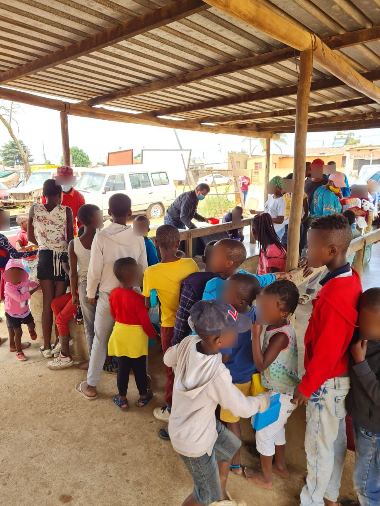
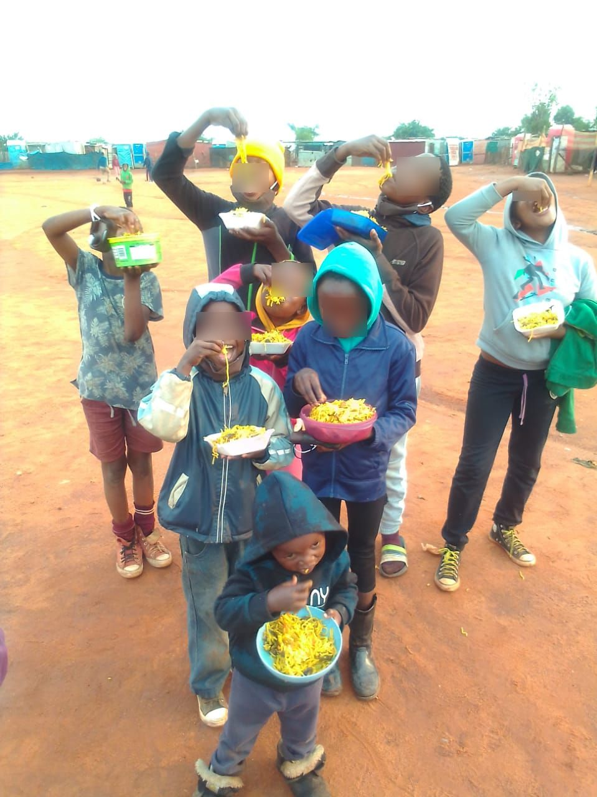
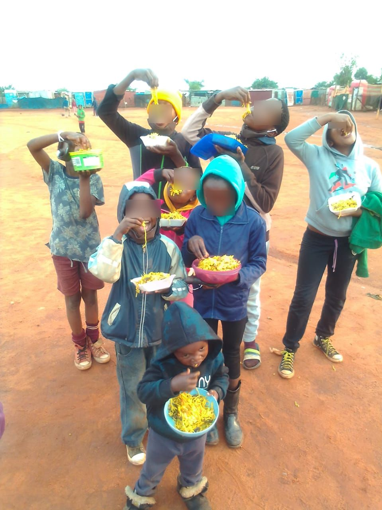

Food For Life South Africa
Creating a Hunger-Free South Africa
Creating a Hunger-Free South Africa
Contact: Vinesh Maharaj: Cell: 083 792 6518 / Email: midrand@fflsa.org
All volunteers are welcome to assist in fundraising, ingredient preparation, and distribution of cooked meals.
🥫 Food Drop-off Point: 135 Norfolk Road, Carlswald, Midrand, Johannesburg
📩 Alternatively, arrangements can be made for collection if needed.
This week we reached an incredible milestone ~ more than 1 million meals served for 2021! That’s more than double the target set for this year, and we could not be more humbled or grateful for your generosity. 🙏
Food for Life Midrand and all its beneficiaries thank each and every one who contributed selflessly. 💙
This month, 42,000 hot meals were distributed in the following areas:
In addition, 2,065 food hampers were distributed. Each food hamper is sufficient for a family of 4, serving 3 meals a day for a month, which amounts to 743,400 meals!
These meals go a long way in helping needy communities get by in these trying times. These communities need your help, and we urge you to continue supporting as we face another wave, potential lockdowns, and new strains of the virus. 🙏
Please continue to take the necessary precautions to stay safe. 🛡️
For more information, kindly contact our chairman, Vinesh Maharaj, on 083 792 6518.
Any and all assistance is highly valued. You can also donate to:
Food for Life Midrand, Nedbank, Cheque Account no. 1066084521, Branch code 198765(00), Swift Code: NEDSZAJJ
Kindly add your email address as a reference. 📧
#donatetoday #charity #hungerfreecommunity #payitforward #spreadkindness #instadaily #community #SaveSouthAfrica #HungerAlleviation
“Together we can do great things†~ Mother Theresa.
Together we ARE doing great things. Together, we are now distributing up to 10,500 meals per week. Together, we have served 312,613 meals this year. Together, we are positively impacting lives. Together, we are on a path to eradicating hunger in South Africa! 🙏
Delicious, wholesome meals were distributed in areas of need in greater Midrand and surrounding areas – Tembisa, Ivory Park, Marlboro, Wards 11, 17, 118, Sandton Ward 109, Alexandra, Rabie Ridge, and Ivory Park. These communities are deeply grateful for the food as it alleviates some of the burdens they face on a daily basis, especially where children are concerned and malnutrition is rife. ❤️
Together we can do MORE.
As Food for Life Midrand relies solely on donations to continue its food relief efforts, we kindly ask you to please share this message with sponsors who may be interested in assisting us in any way. 🙏
For more information, kindly contact our chairman, Vinesh Maharaj, on 083 792 6518.
Or donate to:
Food for Life Midrand, Nedbank, Cheque Account no. 1066084521, Branch code 198765(00), Swift Code: NEDSZAJJ
Kindly add your email address as a reference. 📧
#donatetoday #charity #hungerfreecommunity #payitforward #spreadkindness #instadaily #community #SaveSouthAfrica #HungerAlleviation
Dear Supporters,
More than 300,000 meals served this year! 🎉
Thank you, our valued community. Your commitment to the cause is what makes all this possible, with smiles on many satisfied and nourished faces. 😊
This week, our grateful recipients of the 6,900 meals are from the following areas:
We hope that you will continue your support to help many, many more. 🙏
If you would like to get involved in any way, kindly contact our chairman, Vinesh Maharaj, on 083 792 6518.
Our banking details are:
Name: Food for Life Midrand
Bank: Nedbank, Cheque Account no. 1066084521, Branch code 198765(00), Swift Code: NEDSZAJJ
Kindly add your email address as a reference. 📧
#donatetoday #charity #hungerfreecommunity #payitforward #spreadkindness #instadaily #community #SaveSouthAfrica #HungerAlleviation
Dear Supporters,
Last Sunday’s outreach program was a huge success. A humble thank you to all our sponsors and volunteers who came out to assist in serving our hot meals. 🙏
During this week, 8,100 meals were distributed in the following areas:
The communities are indeed extremely grateful and thankful for the delicious food. 💛
“One tummy at a time makes a huge difference, even though the lines are long and we sometimes cannot feed everyone.”
One meal costs only R10… please donate today and help us extend our reach to the many more that need our help. 🙏
If you would like to get involved in any way, kindly contact our chairman, Vinesh Maharaj, on 083 792 6518.
Our banking details are:
Name: Food for Life Midrand
Bank: Nedbank, Cheque Account no. 1066084521, Branch code 198765(00), Swift Code: NEDSZAJJ
Kindly add your email address as a reference. 📧
#donatetoday #charity #hungerfreecommunity #payitforward #spreadkindness #instadaily #community #SaveSouthAfrica #HungerAlleviation
Dear Supporters,
Join us tomorrow as we go out into the various communities around Midrand to distribute hot meals to families in need. 🙏
Your valuable contributions in cash and kind have been a tremendous help in assisting Food for Life Midrand in the fight against malnutrition and hunger. ❤️
This week, we were able to feed 6900 children and adults in the following areas:
Please continue your support. Donate to this worthy cause. Every contribution, no matter how small, goes a long way in helping those in need.
If you would like to get involved in any way, kindly contact our chairman, Vinesh Maharaj, on 083 792 6518.
Our banking details are:
Name: Food for Life Midrand
Bank: Nedbank, Cheque Account no. 1066084521, Branch code 198765(00), Swift Code: NEDSZAJJ
Kindly add your email address as a reference. 📧
#donatetoday #charity #hungerfreecommunity #payitforward #spreadkindness #instadaily #community #SaveSouthAfrica #HungerAlleviation
🗓️ Food for Life Midrand


🗓️ Midrand and surrounding areas

🗓️ More than 300,000 meals served this year
🗓️ One meal costs only R10, please donate today!

🗓️ Food for Life Midrand
 


🌟 Join us in spreading love and nourishment to those in need. Your support, whether through volunteering or donations, makes a huge impact!
📩 Contact Vinesh Maharaj: 083 792 6518 / Email: midrand@fflsa.org
🙌 All Volunteers Welcome! Assist in fundraising, cleaning ingredients, and distributing cooked meals.
📠Food Donations: Drop off food items at 135 Norfolk Road, Carlswald, Midrand, Johannesburg or contact us to arrange collection.
#CreatingAHungerFreeNation #Charity #Nonprofit #Donate #Love #Fundraising #Community #Support #Help #Volunteer #GivingBack #MakeADifference #Hope #Change #Philanthropy
For more information or to get involved, reach out to us:
Email: info@foodforlife.org.za Phone: +27 12 345 6789 Address: 123 Compassion Street, Midrand, South Africa